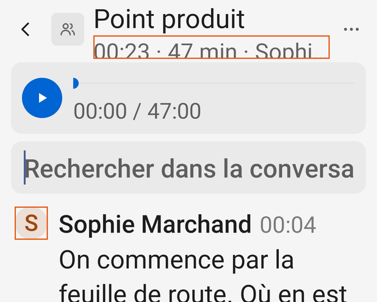
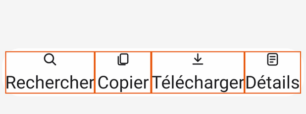

Ce qui se calcule : contrastes de chaque texte réellement dessiné, contrastes des icônes et des états, tailles de cible, débordements à 360 dp et à 200 %, sémantique d'accessibilité, typographie des textes, poids des images. Les données brutes sont à côté, en CSV.
GradientDrawable, RippleDrawable), description, état, titre, cliquable. Le fond effectif d'un texte est la composition de ses ancêtres sur le fond de la page. Outils dans donnees/outils/.fontScale = 2, échelle non linéaire d'Android 14, Android 14 › Accessibility › Non-linear font scaling to 200%).| Variante | Textes relevés | Sous 4,5:1 (WCAG) | Sous le seuil APCA | Textes coupés « … » | Cibles | Cibles < 48 dp |
|---|---|---|---|---|---|---|
| Clair, 412 dp | 311 | 24 | 6 | 4 | 204 | 6 |
| Sombre, 412 dp | 357 | 5 | 183 | 5 | 229 | 6 |
| Clair, 360 dp | 303 | 22 | 6 | 10 | 201 | 36 |
| Clair, 600 dp | 305 | 22 | 6 | 0 | 202 | 6 |
| Texte 200 % | 290 | 18 | 5 | 38 | 201 | 3 |
Les nombres comptent des occurrences (un même texte répété dans plusieurs états compte plusieurs fois). Les tableaux suivants regroupent les couples uniques. Le clair « base » contient aussi trois écrans en sombre (le test enSombre du banc) : ils sont comptés à part ci-dessous.
| Texte (exemples) | sp | Graisse | Texte composé | Fond composé | WCAG | APCA Lc | Fois | ||
|---|---|---|---|---|---|---|---|---|---|
| 8 | 15 | 700 | #0064D2 | #D8D8D8 | 3,93:1 | ✗ 4.5 | 54,4 | ✗ 60 | 1 |
| M | 13 | 500 | #0064D2 | #D7E3F1 | 4,31:1 | ✗ 4.5 | 60,0 | ✗ 60 | 5 |
| 01:21 01:22 00:04 | 13 | 400 | #7B7B7B | #F5F5F5 | 3,88:1 | ✗ 4.5 | 63,3 | ✓ | 18 |
| Relier un calendrier | 14 | 500 | #0064D2 | #E9E9E9 | 4,63:1 | ✓ | 64,4 | ✓ | 1 |
| SM KB V1 | 13 | 500 | #A0470A | #EBE0D8 | 4,75:1 | ✓ | 62,9 | ✓ | 11 |
| Aujourd'hui · dimanche 8 novembre Samedi 7 novembre Vendredi 6 novembre | 14 | 500 | #6D6D6D | #F5F5F5 | 4,78:1 | ✓ | 69,9 | ✓ | 26 |
| L M J | 12 | 400 | #6D6D6D | #F5F5F5 | 4,78:1 | ✓ | 69,9 | ✓ | 7 |
| Aucun calendrier relié : rien ne se déclenchera. | 14 | 400 | #A0470A | #E9E9E9 | 5,11:1 | ✓ | 67,4 | ✓ | 1 |
| Non relié | 15 | 400 | #A0470A | #E9E9E9 | 5,11:1 | ✓ | 67,4 | ✓ | 1 |
| ● Écoute depuis 00:21 ● Écoute depuis 08:00 | 14 | 400 | #0064D2 | #F5F5F5 | 5,13:1 | ✓ | 71,1 | ✓ | 2 |
| Moi | 15 | 500 | #0064D2 | #F5F5F5 | 5,13:1 | ✓ | 71,1 | ✓ | 5 |
| 00:00 / 47:00 00:00 / 45:00 | 12 | 400 | #5D5D5D | #E9E9E9 | 5,41:1 | ✓ | 69,7 | ✓ | 3 |
| Tous les appels, téléphone ou app. | 13 | 400 | #5D5D5D | #E9E9E9 | 5,41:1 | ✓ | 69,7 | ✓ | 1 |
| MacBook Air | 15 | 400 | #5D5D5D | #E9E9E9 | 5,41:1 | ✓ | 69,7 | ✓ | 1 |
| 01:21 · ● En cours · 0 s | 14 | 400 | #C41E14 | #F5F5F5 | 5,44:1 | ✓ | 71,7 | ✓ | 1 |
| Arrêter l'enregistrement | 16 | 400 | #C41E14 | #F5F5F5 | 5,44:1 | ✓ | 71,7 | ✓ | 1 |
| 00:21 · 47 min · Sophie Marchand, Karim Benali 20:21 · 12 min · Thomas Girard 23:21 · 9 min · Paul Mercier | 14 | 400 | #626262 | #F5F5F5 | 5,59:1 | ✓ | 74,5 | ✓ | 35 |
| Enregistrer une réunion Réglages Prendre une photo | 16 | 400 | #626262 | #F5F5F5 | 5,59:1 | ✓ | 74,5 | ✓ | 19 |
| 01:21 · 0 s 01:12 · 10 min 01:21 · ● En cours · 0 s | 13 | 400 | #626262 | #F5F5F5 | 5,59:1 | ✓ | 74,5 | ✓ | 10 |
| Aucune parole reconnue Pas encore arrivée sur MacBook Air. Rien d'entendu pour l'instant. | 15 | 400 | #626262 | #F5F5F5 | 5,59:1 | ✓ | 74,5 | ✓ | 7 |
| (indice) Rechercher | 16 | 500 | #626262 | #F5F5F5 | 5,59:1 | ✓ | 74,5 | ✓ | 2 |
| Scanner le code du Mac | 16 | 500 | #FFFFFF | #0064D2 | 5,59:1 | ✓ | 82,4 | ✓ | 1 |
| Manuel ⏎ Quand vous touchez Enregistrer une réun Événements du calendrier ⏎ Pendant vos rendez-vo Tout le temps ⏎ Toute la journée, rangée dans le | 16 | 400 | #1D1D1F | #E9E9E9 | 13,92:1 | ✓ | 91,0 | ✓ | 6 |
| Journal Point produit Café avec Thomas | 16 | 400 | #1D1D1F | #F5F5F5 | 15,44:1 | ✓ | 97,8 | ✓ | 56 |
| Point Réunion Point produit | 17 | 400 | #1D1D1F | #F5F5F5 | 15,44:1 | ✓ | 97,8 | ✓ | 12 |
| Novembre 2026 lundi | 16 | 500 | #1D1D1F | #F5F5F5 | 15,44:1 | ✓ | 97,8 | ✓ | 3 |
| 1 2 3 | 15 | 400 | #1D1D1F | #F5F5F5 | 15,44:1 | ✓ | 97,8 | ✓ | 29 |
| Sophie Marchand Karim Benali Voix 1 | 15 | 500 | #1D1D1F | #F5F5F5 | 15,44:1 | ✓ | 97,8 | ✓ | 11 |
| Aucun Mac relié | 17 | 500 | #1D1D1F | #F5F5F5 | 15,44:1 | ✓ | 97,8 | ✓ | 1 |
| Rechercher Copier Télécharger | 12 | 400 | #1D1D1F | #FEFEFE | 16,75:1 | ✓ | 103,4 | ✓ | 34 |
| Texte (exemples) | sp | Graisse | Texte composé | Fond composé | WCAG | APCA Lc | Fois | ||
|---|---|---|---|---|---|---|---|---|---|
| 8 | 15 | 700 | #0064D2 | #383838 | 2,08:1 | ✗ 4.5 | 17,2 | ✗ 60 | 1 |
| Relier un calendrier | 14 | 500 | #0064D2 | #292929 | 2,61:1 | ✗ 4.5 | 21,1 | ✗ 60 | 2 |
| ● Écoute depuis 00:23 ● Écoute depuis 08:00 | 14 | 400 | #0064D2 | #1E1E1E | 2,98:1 | ✗ 4.5 | 22,8 | ✗ 60 | 2 |
| 01:23 · ● En cours · 0 s | 14 | 400 | #FF453A | #1E1E1E | 4,89:1 | ✓ | 39,8 | ✗ 60 | 1 |
| Arrêter l'enregistrement | 16 | 400 | #FF453A | #1E1E1E | 4,89:1 | ✓ | 39,8 | ✗ 60 | 1 |
| M | 13 | 500 | #409CFF | #222D39 | 4,92:1 | ✓ | 43,6 | ✗ 60 | 6 |
| 01:23 01:24 00:04 | 13 | 400 | #8E8E8E | #1E1E1E | 5,09:1 | ✓ | 39,8 | ✗ 60 | 21 |
| Moi | 15 | 500 | #409CFF | #1E1E1E | 5,89:1 | ✓ | 46,1 | ✗ 60 | 6 |
| SM KB V1 | 13 | 500 | #FF9F0A | #392E1C | 6,47:1 | ✓ | 57,7 | ✗ 60 | 13 |
| 00:00 / 47:00 00:00 / 45:00 | 12 | 400 | #ADADAD | #292929 | 6,55:1 | ✓ | 54,6 | ✗ 60 | 3 |
| Tous les appels, téléphone ou app. | 13 | 400 | #ADADAD | #292929 | 6,55:1 | ✓ | 54,6 | ✗ 60 | 2 |
| MacBook Air | 15 | 400 | #ADADAD | #292929 | 6,55:1 | ✓ | 54,6 | ✗ 60 | 2 |
| Aucun calendrier relié : rien ne se déclenchera. | 14 | 400 | #FF9F0A | #292929 | 7,12:1 | ✓ | 59,1 | ✗ 60 | 2 |
| Non relié | 15 | 400 | #FF9F0A | #292929 | 7,12:1 | ✓ | 59,1 | ✗ 60 | 2 |
| Aujourd'hui · dimanche 8 novembre Samedi 7 novembre Vendredi 6 novembre | 14 | 500 | #A9A9A9 | #1E1E1E | 7,13:1 | ✓ | 54,1 | ✗ 60 | 32 |
| 00:23 · 47 min · Sophie Marchand, Karim Benali 20:23 · 12 min · Thomas Girard 23:23 · 9 min · Paul Mercier | 14 | 400 | #A9A9A9 | #1E1E1E | 7,13:1 | ✓ | 54,1 | ✗ 60 | 39 |
| Enregistrer une réunion Réglages Prendre une photo | 16 | 400 | #A9A9A9 | #1E1E1E | 7,13:1 | ✓ | 54,1 | ✗ 60 | 21 |
| 01:23 · 0 s 01:13 · 10 min 01:23 · ● En cours · 0 s | 13 | 400 | #A9A9A9 | #1E1E1E | 7,13:1 | ✓ | 54,1 | ✗ 60 | 11 |
| Aucune parole reconnue Pas encore arrivée sur MacBook Air. Rien d'entendu pour l'instant. | 15 | 400 | #A9A9A9 | #1E1E1E | 7,13:1 | ✓ | 54,1 | ✗ 60 | 7 |
| L M J | 12 | 400 | #A9A9A9 | #1E1E1E | 7,13:1 | ✓ | 54,1 | ✗ 60 | 7 |
| (indice) Rechercher | 16 | 500 | #A9A9A9 | #1E1E1E | 7,13:1 | ✓ | 54,1 | ✗ 60 | 2 |
| Scanner le code du Mac | 16 | 500 | #FFFFFF | #0064D2 | 5,59:1 | ✓ | 82,4 | ✓ | 1 |
| Rechercher Copier Télécharger | 12 | 400 | #F5F5F7 | #2B2B2D | 12,95:1 | ✓ | 97,3 | ✓ | 38 |
| Manuel ⏎ Quand vous touchez Enregistrer une réun Événements du calendrier ⏎ Pendant vos rendez-vo Tout le temps ⏎ Toute la journée, rangée dans le | 16 | 400 | #F5F5F7 | #292929 | 13,43:1 | ✓ | 97,8 | ✓ | 12 |
| Journal Point produit Café avec Thomas | 16 | 400 | #F5F5F7 | #1E1E1E | 15,31:1 | ✓ | 99,5 | ✓ | 63 |
| Point Réunion Point produit | 17 | 400 | #F5F5F7 | #1E1E1E | 15,31:1 | ✓ | 99,5 | ✓ | 14 |
| Novembre 2026 lundi | 16 | 500 | #F5F5F7 | #1E1E1E | 15,31:1 | ✓ | 99,5 | ✓ | 3 |
| 1 2 3 | 15 | 400 | #F5F5F7 | #1E1E1E | 15,31:1 | ✓ | 99,5 | ✓ | 29 |
| Sophie Marchand Karim Benali Voix 1 | 15 | 500 | #F5F5F7 | #1E1E1E | 15,31:1 | ✓ | 99,5 | ✓ | 13 |
| Aucun Mac relié | 17 | 500 | #F5F5F7 | #1E1E1E | 15,31:1 | ✓ | 99,5 | ✓ | 1 |
Lecture : en clair, les échecs WCAG sont l'heure des répliques (50 %, 3,88:1), l'initiale de « Moi » sur son rond (4,31:1), le chiffre d'aujourd'hui sur le jour choisi (3,93:1). En sombre, tout ce qui garde #0064D2 : « ● Écoute depuis… » (2,98:1), « Relier un calendrier » (2,61:1), aujourd'hui (2,08:1). APCA ajoute en sombre le texte secondaire (blanc à 62 %, Lc 54 sur la page, Lc 55 sur une carte), les heures à 50 % (Lc 40), « Moi » (Lc 46) et LIVE (Lc 40) : lisibles, mais sous Lc 60.
Les teintes des icônes ne se lisent pas dans l'arbre des vues (elles sont posées par setTint) : elles sont reprises du code, composées sur leur fond réel, dans les deux modes.
| Mode | Élément | Où | Premier plan | Fond | WCAG | 3:1 | APCA |
|---|---|---|---|---|---|---|---|
| clair | Icône au texte (Retour, Liste, barre du bas) | Screen.kt:110, ConversationScreen.kt:177 | #1D1D1F | #F5F5F5 | 15,44:1 | ✓ | 97,8 |
| clair | Icône secondaire (Rechercher, pied, Calendrier) | HomeScreen.kt:61,76,232-235 | #626262 | #F5F5F5 | 5,59:1 | ✓ | 74,5 |
| clair | Mois précédent (ic_retour, teinte secondaire) | HomeScreen.kt:283 | #626262 | #F5F5F5 | 5,59:1 | ✓ | 74,5 |
| clair | Mois suivant (chevron : 40 % gravé × teinte secondaire) | HomeScreen.kt:285, chevron.xml:10 | #BABABA | #F5F5F5 | 1,77:1 | ✗ | 31,1 |
| clair | Chevron des Réglages (40 % gravé × ink 0,4) | Screen.kt:148, chevron.xml:10 | #C3C3C3 | #E9E9E9 | 1,44:1 | ✗ | 18,9 |
| clair | Point d'un jour qui a une conversation (ink 0,45) | HomeScreen.kt:318 | #878787 | #F5F5F5 | 3,32:1 | ✓ | 57,8 |
| clair | Vignette : icône neutre (ink 0,55) sur masse 0,07 | Screen.kt:89, HomeScreen.kt:268 | #676767 | #E4E4E4 | 4,46:1 | ✓ | 62,4 |
| clair | Vignette : WhatsApp #25D366 sur masse 0,07 | Screen.kt:85 | #25D366 | #E4E4E4 | 1,56:1 | ✗ | 21,6 |
| clair | Vignette : Signal #3B45FD sur masse 0,07 | Screen.kt:86 | #3B45FD | #E4E4E4 | 4,77:1 | ✓ | 63,1 |
| clair | Vignette : Telegram #26A5E4 sur masse 0,07 | Screen.kt:87 | #26A5E4 | #E4E4E4 | 2,17:1 | ✗ | 36,8 |
| clair | Vignette : Meet #00897B sur masse 0,07 | Screen.kt:88 | #00897B | #E4E4E4 | 3,39:1 | ✓ | 53,2 |
| clair | Vignette en cours : micro LIVE sur masse 0,07 | HomeScreen.kt:243 | #C41E14 | #E4E4E4 | 4,65:1 | ✓ | 61,6 |
| clair | Journal : onde ACCENT sur masse ACCENT 12 % | HomeScreen.kt:241-253 | #0064D2 | #D7E3F1 | 4,31:1 | ✓ | 60,0 |
| clair | Rond des modes (RadioButton, ACCENT) sur carte | SettingsScreen.kt:38 | #0064D2 | #E9E9E9 | 4,59:1 | ✓ | 63,8 |
| clair | Curseur du lecteur (ACCENT) sur carte | ConversationScreen.kt:87-88 | #0064D2 | #E9E9E9 | 4,59:1 | ✓ | 63,8 |
| clair | Piste du lecteur (ink 0,12) sur carte | ConversationScreen.kt:89 | #CCCCCC | #E9E9E9 | 1,31:1 | 13,8 | |
| clair | Lire : icône blanche sur ACCENT | ConversationScreen.kt:274 | #FFFFFF | #0064D2 | 5,59:1 | ✓ | 82,4 |
| clair | Pastille : Prendre une photo (secondaire) sur verre | Pastille.kt:44 | #666666 | #FEFEFE | 5,73:1 | ✓ | 78,5 |
| clair | Pastille : Arrêter (LIVE) sur verre | Pastille.kt:45 | #C41E14 | #FEFEFE | 5,90:1 | ✓ | 77,3 |
| clair | Bouton de liste choisi : masse 0,12 contre la capsule 0,05 | HomeScreen.kt:66,113 | #D7D7D7 | #E9E9E9 | 1,18:1 | ✗ | 7,6 |
| clair | Jour choisi : masse 0,12 sur la page | HomeScreen.kt:312 | #D7D7D7 | #F5F5F5 | 1,32:1 | ✗ | 14,9 |
| clair | Carte (0,05) contre la page | Look.kt:28 | #E9E9E9 | #F5F5F5 | 1,12:1 | 0,0 | |
| sombre | Icône au texte (Retour, Liste, barre du bas) | Screen.kt:110, ConversationScreen.kt:177 | #F5F5F7 | #1E1E1E | 15,31:1 | ✓ | 99,5 |
| sombre | Icône secondaire (Rechercher, pied, Calendrier) | HomeScreen.kt:61,76,232-235 | #A9A9A9 | #1E1E1E | 7,13:1 | ✓ | 54,1 |
| sombre | Mois précédent (ic_retour, teinte secondaire) | HomeScreen.kt:283 | #A9A9A9 | #1E1E1E | 7,13:1 | ✓ | 54,1 |
| sombre | Mois suivant (chevron : 40 % gravé × teinte secondaire) | HomeScreen.kt:285, chevron.xml:10 | #565656 | #1E1E1E | 2,26:1 | ✗ | 14,5 |
| sombre | Chevron des Réglages (40 % gravé × ink 0,4) | Screen.kt:148, chevron.xml:10 | #4C4C4C | #292929 | 1,68:1 | ✗ | 8,9 |
| sombre | Point d'un jour qui a une conversation (ink 0,45) | HomeScreen.kt:318 | #838383 | #1E1E1E | 4,43:1 | ✓ | 34,6 |
| sombre | Vignette : icône neutre (ink 0,55) sur masse 0,07 | Screen.kt:89, HomeScreen.kt:268 | #A1A1A1 | #2E2E2E | 5,25:1 | ✓ | 46,6 |
| sombre | Vignette : WhatsApp #25D366 sur masse 0,07 | Screen.kt:85 | #25D366 | #2E2E2E | 6,86:1 | ✓ | 60,1 |
| sombre | Vignette : Signal #3B45FD sur masse 0,07 | Screen.kt:86 | #3B45FD | #2E2E2E | 2,24:1 | ✗ | 18,0 |
| sombre | Vignette : Telegram #26A5E4 sur masse 0,07 | Screen.kt:87 | #26A5E4 | #2E2E2E | 4,91:1 | ✓ | 44,3 |
| sombre | Vignette : Meet #00897B sur masse 0,07 | Screen.kt:88 | #00897B | #2E2E2E | 3,15:1 | ✓ | 27,7 |
| sombre | Vignette en cours : micro LIVE sur masse 0,07 | HomeScreen.kt:243 | #FF453A | #2E2E2E | 3,99:1 | ✓ | 37,0 |
| sombre | Journal : onde ACCENT sur masse ACCENT 12 % | HomeScreen.kt:241-253 | #0064D2 | #1A2734 | 2,72:1 | ✗ | 21,6 |
| sombre | Rond des modes (RadioButton, ACCENT) sur carte | SettingsScreen.kt:38 | #0064D2 | #292929 | 2,58:1 | ✗ | 20,9 |
| sombre | Curseur du lecteur (ACCENT) sur carte | ConversationScreen.kt:87-88 | #0064D2 | #292929 | 2,58:1 | ✗ | 20,9 |
| sombre | Piste du lecteur (ink 0,12) sur carte | ConversationScreen.kt:89 | #434343 | #292929 | 1,47:1 | 0,0 | |
| sombre | Lire : icône blanche sur ACCENT | ConversationScreen.kt:274 | #FFFFFF | #0064D2 | 5,59:1 | ✓ | 82,4 |
| sombre | Pastille : Prendre une photo (secondaire) sur verre | Pastille.kt:44 | #AEAEAF | #2B2B2D | 6,39:1 | ✓ | 54,6 |
| sombre | Pastille : Arrêter (LIVE) sur verre | Pastille.kt:45 | #FF453A | #2B2B2D | 4,14:1 | ✓ | 37,5 |
| sombre | Bouton de liste choisi : masse 0,12 contre la capsule 0,05 | HomeScreen.kt:66,113 | #393939 | #292929 | 1,26:1 | ✗ | 0,0 |
| sombre | Jour choisi : masse 0,12 sur la page | HomeScreen.kt:312 | #393939 | #1E1E1E | 1,45:1 | ✗ | 0,0 |
| sombre | Carte (0,05) contre la page | Look.kt:28 | #292929 | #1E1E1E | 1,15:1 | 0,0 |
14 éléments sous 3:1 sur 40 mesurés. Les plus visibles : le logo WhatsApp en clair (1,56:1), le chevron des Réglages (1,44:1 clair, 1,68:1 sombre), la flèche « Mois suivant » (1,77:1), et l'état « choisi » du sélecteur Liste/Calendrier et du jour, qui ne tient qu'à une masse de 12 % (1,18:1 à 1,45:1). Pour ce dernier, l'icône choisie passe aussi du secondaire au texte : l'état se lit, mais faiblement.
| Cible | Classe | Largeur | Hauteur | Écrans |
|---|---|---|---|---|
| Lire | ImageButton | 44,0 | 44,0 | conversation, conversation-recherche, site-reunion |
| (sans nom) | EditText | 388,0 | 41,7 | conversation-recherche |
| Rechercher | EditText | 332,0 | 42,7 | icones-recherche, recherche |
| Cible | Classe | Largeur | Hauteur | Écrans |
|---|---|---|---|---|
| Dimanche 1 novembre | LinearLayout | 46,0 | 48,0 | calendrier |
| Lundi 2 novembre | LinearLayout | 45,7 | 48,0 | calendrier |
| Mardi 3 novembre | LinearLayout | 45,7 | 48,0 | calendrier |
| Mercredi 4 novembre | LinearLayout | 45,7 | 48,0 | calendrier |
| Jeudi 5 novembre, des conversations | LinearLayout | 45,7 | 48,0 | calendrier |
| Vendredi 6 novembre, des conversations | LinearLayout | 45,7 | 48,0 | calendrier |
| Samedi 7 novembre, des conversations | LinearLayout | 45,7 | 48,0 | calendrier |
| Aujourd'hui · dimanche 8 novembre, des conversations | LinearLayout | 46,0 | 48,0 | calendrier |
| Lundi 9 novembre | LinearLayout | 45,7 | 48,0 | calendrier |
| Mardi 10 novembre | LinearLayout | 45,7 | 48,0 | calendrier |
| Mercredi 11 novembre | LinearLayout | 45,7 | 48,0 | calendrier |
| Jeudi 12 novembre | LinearLayout | 45,7 | 48,0 | calendrier |
| Vendredi 13 novembre | LinearLayout | 45,7 | 48,0 | calendrier |
| Samedi 14 novembre | LinearLayout | 45,7 | 48,0 | calendrier |
| Dimanche 15 novembre | LinearLayout | 46,0 | 48,0 | calendrier |
| Lundi 16 novembre | LinearLayout | 45,7 | 48,0 | calendrier |
| Mardi 17 novembre | LinearLayout | 45,7 | 48,0 | calendrier |
| Mercredi 18 novembre | LinearLayout | 45,7 | 48,0 | calendrier |
| Jeudi 19 novembre | LinearLayout | 45,7 | 48,0 | calendrier |
| Vendredi 20 novembre | LinearLayout | 45,7 | 48,0 | calendrier |
| Samedi 21 novembre | LinearLayout | 45,7 | 48,0 | calendrier |
| Dimanche 22 novembre | LinearLayout | 46,0 | 48,0 | calendrier |
| Lundi 23 novembre | LinearLayout | 45,7 | 48,0 | calendrier |
| Mardi 24 novembre | LinearLayout | 45,7 | 48,0 | calendrier |
| Mercredi 25 novembre | LinearLayout | 45,7 | 48,0 | calendrier |
| Jeudi 26 novembre | LinearLayout | 45,7 | 48,0 | calendrier |
| Vendredi 27 novembre | LinearLayout | 45,7 | 48,0 | calendrier |
| Samedi 28 novembre | LinearLayout | 45,7 | 48,0 | calendrier |
| Dimanche 29 novembre | LinearLayout | 46,0 | 48,0 | calendrier |
| Lundi 30 novembre | LinearLayout | 45,7 | 48,0 | calendrier |
| Lire | ImageButton | 44,0 | 44,0 | conversation, conversation-recherche, site-reunion |
| (sans nom) | EditText | 336,0 | 41,7 | conversation-recherche |
| Rechercher | EditText | 280,0 | 42,7 | icones-recherche, recherche |
| Cible | Classe | Largeur | Hauteur | Écrans |
|---|---|---|---|---|
| Lire | ImageButton | 44,0 | 44,0 | conversation, conversation-recherche, site-reunion |
À cela s'ajoute la SeekBar du lecteur : 308 × 26 dp, que le relevé ne compte pas parmi les « cliquables » (elle se déplace au doigt). Sa hauteur de 26 dp est sous les 48 dp d'Android. Aucune cible n'est sous les 24 × 24 px de WCAG 2.5.8.
| Variante | Textes coupés par « … » |
|---|---|
| Clair, 412 dp | 4 |
| Clair, 360 dp | 10 |
| Sombre, 412 dp | 5 |
| Texte 200 % | 38 |
| Variante | Écran | Texte complet | sp | Largeur dp |
|---|---|---|---|---|
| Clair, 412 dp | conversation-recherche | 00:22 · 47 min · Sophie Marchand, Karim Benali | 13 | 258,0 |
| Clair, 360 dp | accueil-ecoute | 00:22 · 47 min · Sophie Marchand, Karim Benali | 14 | 264,0 |
| Clair, 360 dp | site-accueil | 15:48 · 34 min · Sophie Marchand, Karim Benali, Julie Roussel | 14 | 264,0 |
| Clair, 360 dp | site-accueil | Cabinet Lefèvre · commissaire aux comptes | 16 | 264,0 |
| Clair, 360 dp | site-notes | Campagne de Noël · point d'avancement | 16 | 264,0 |
| Clair, 360 dp | site-reunion | Revue mensuelle · Transports Morel | 17 | 206,0 |
| Clair, 412 dp | site-accueil | 15:48 · 34 min · Sophie Marchand, Karim Benali, Julie Roussel | 14 | 316,0 |
| Clair, 412 dp | site-reunion | Revue mensuelle · Transports Morel | 17 | 258,0 |
| Texte 200 % | accueil-ecoute | 00:22 · 47 min · Sophie Marchand, Karim Benali | 13 | 316,0 |
| Texte 200 % | accueil-ecoute | 20:22 · 12 min · Thomas Girard | 13 | 316,0 |
| Texte 200 % | accueil-ecoute | Paul Mercier · expert-comptable | 14 | 316,0 |
| Texte 200 % | conversation-recherche | 00:23 · 47 min · Sophie Marchand, Karim Benali | 12.5 | 258,0 |
| Texte 200 % | icones-entete | 00:23 · 12 min · Claire Duval | 12.5 | 258,0 |
| Texte 200 % | icones-recherche | Je peux m'en occuper d'ici lundi. | 13 | 316,0 |
| Texte 200 % | icones | 23:23 · 12 min · Claire Duval | 13 | 316,0 |
| Texte 200 % | icones | 21:23 · 31 min · Julie Roussel | 13 | 316,0 |
| Texte 200 % | icones | 20:23 · 6 min · Thomas Girard | 13 | 316,0 |
| Texte 200 % | icones | 18:23 · 30 min · Sophie Marchand | 13 | 316,0 |
| Texte 200 % | site-accueil | 15:48 · 34 min · Sophie Marchand, Karim Benali, Julie Roussel | 13 | 316,0 |
| Texte 200 % | site-accueil | Banque Aurore · chargé d'affaires | 14 | 316,0 |
| Texte 200 % | site-accueil | 11:20 · 6 min · Thomas Girard | 13 | 316,0 |
| Texte 200 % | site-accueil | Cabinet Lefèvre · commissaire aux comptes | 14 | 316,0 |
| Texte 200 % | site-accueil | Banque Ferrand · ligne de crédit | 14 | 316,0 |
| Texte 200 % | site-accueil | 10:30 · 31 min · Elsa Ferrand | 13 | 316,0 |
| Texte 200 % | site-notes | Campagne de Noël · point d'avancement | 14 | 316,0 |
| Texte 200 % | site-notes | 10:00 · 41 min · Agence Lumen | 13 | 316,0 |
| Texte 200 % | site-notes | Agence Lumen · visuels du salon | 14 | 316,0 |
| Texte 200 % | site-notes | 15:00 · 22 min · Claire Duval | 13 | 316,0 |
| Texte 200 % | site-notes | Studio Marelle · photos de Noël | 14 | 316,0 |
| Texte 200 % | site-notes | Imprimerie Duval · kakémonos | 14 | 316,0 |
| Texte 200 % | site-notes | 11:20 · 6 min · Imprimerie Duval | 13 | 316,0 |
| Texte 200 % | site-reunion | Revue mensuelle · Transports Morel | 14.5 | 258,0 |
Les coupures verticales ne se voient pas dans le relevé (Android réduit la vue au lieu de la faire déborder) mais se voient dans les images à 200 % :


| Contrôle | Relevé | Lecture |
|---|---|---|
Titres (isAccessibilityHeading) | 0 sur 1 084 vues | Ni les jours de la liste, ni les groupes des Réglages, ni le titre d'un écran ne sont des titres : TalkBack ne peut pas sauter de jour en jour (WCAG 1.3.1). |
| Outils inactifs (Copier, Télécharger sans texte) | alpha 0,4, toujours actifs | ConversationScreen.kt:183-184 : seule l'opacité change ; TalkBack annonce « Copier, bouton » sans dire qu'il ne fait rien (WCAG 4.1.2). |
| États annoncés | 2 : Liste/Calendrier (isSelected), Enregistrer les appels (stateDescription) | Le lecteur dit « Lire » ou « Pause » ; le jour choisi du calendrier n'a pas d'état « sélectionné ». |
Annonces vivantes (accessibilityLiveRegion) | 0 | « ● En cours », le texte en direct et la durée changent sans être annoncés ; c'est le bon choix pour une durée qui change chaque seconde, moins pour l'arrivée du texte du Mac. |
| Images décoratives | toutes cachées (IMPORTANT_FOR_ACCESSIBILITY_NO) | Correct : les vignettes ne doublent pas le titre. |
| Boutons d'icône | tous nommés | Retour, Plus, Rechercher, Fermer la recherche, Liste, Calendrier, Mois précédent / suivant, Lire / Pause, Prendre une photo, Arrêter l'enregistrement. « Plus » nomme le bouton ⋯ : Android dit « Plus d'options ». |
| Jours du calendrier | « Dimanche 8 novembre, des conversations » | Bien nommés ; « Aujourd'hui · dimanche 8 novembre » lu tel quel avec son point médian. |
180 chaînes visibles contrôlées (donnees/mesures-typographie.csv). Règles : espace insécable avant « : », espace fine insécable avant « ? » « ! » « ; » (Wikipédia, Espace insécable › Usage › En France).
| Contrôle | Chaînes | Exemples |
|---|---|---|
| apostrophe droite (') | 22 | Rien d'entendu pour l'instant. ConversationScreen.kt:214 Elle n'est pas encore arrivée sur $mac : elle sera perdue. ConversationScreen.kt:410 Arrêter l'enregistrement HomeScreen.kt:231 |
| espace ordinaire avant « : » | 12 | Elle n'est pas encore arrivée sur $mac : elle sera perdue. ConversationScreen.kt:410 } n'a pas confirmé son identité : rien ne lui est envoyé. Sc LinkService.kt:654 Pas d'androidx : le retour passe encore par ici MainActivity.kt:160 |
| guillemets « » avec espace ordinaire | 4 | « $meeting » commence LinkService.kt:87 « ${e.title} » ${Agenda.at(e.start)} risque de ne pas s'enre LinkService.kt:270 réunion « $title » de l'agenda LinkService.kt:297 |
| points de suspension en un caractère (…) | 3 | Préparation du lecteur de code… MainActivity.kt:182 Connexion à $mac… SetupScreen.kt:59 Connexion à $mac… SetupScreen.kt:63 |
| espace ordinaire avant « ? » | 2 | Supprimer la conversation ? ConversationScreen.kt:413 Une réunion commence sur ${Link.linkedName(this) ?: LinkService.kt:493 |
| espace ordinaire autour de « › » | 2 | Dans Téléchargements › CallRecorder ConversationScreen.kt:386 Sur le Mac : Réglages › Paramètres › Téléphones › Ajouter un SetupScreen.kt:64 |
| nombre et unité séparés par une espace ordinaire | 2 | Pas commencé : il reste moins de 500 Mo Recordings.kt:137 Arrêté : il reste moins de 500 Mo Recordings.kt:314 |
Autres écarts relevés : « Pas encore transcrit. » (Journal) et « Pas encore transcrite. » (conversation) ; « Aucune parole reconnue » sans point quand ses voisines en ont un (ConversationScreen.kt:242) ; « CallRecorder » visible dans 4 textes (étiquette de l'app, service d'accessibilité, toast, boîte des Réglages) quand la marque écrit « Callrecorder ». Les apostrophes droites sont celles du Mac et du site : elles ne sont pas un écart.
| Fichier | Pixels | Octets | Micro |
|---|---|---|---|
| mipmap-mdpi/ic_launcher_devant.png | 108 | 3 816 | 38 px (35,2 %) |
| mipmap-hdpi/ic_launcher_devant.png | 162 | 7 848 | 56 px (34,6 %) |
| mipmap-xhdpi/ic_launcher_devant.png | 216 | 14 621 | 74 px (34,3 %) |
| mipmap-xxhdpi/ic_launcher_devant.png | 324 | 31 675 | 112 px (34,6 %) |
| mipmap-xxxhdpi/ic_launcher_devant.png | 432 | 54 980 | 150 px (34,7 %) |
| res/drawable/*.xml (26 vecteurs) | — | 15 696 | — |
Le micro occupe 37,3 dp sur les 108 du calque, soit 57 % de la zone sûre de 66 dp (Adaptive icons › Design adaptive icons : « The 66x66 safe zone … is never clipped »). Seul le fichier xxxhdpi dépasse 128 px de micro : c'est le seul qui garde le mot de la plaque, et il sert aux téléphones au-dessus de 480 dpi. Le poids total, 113 Ko, ne pose pas de problème.